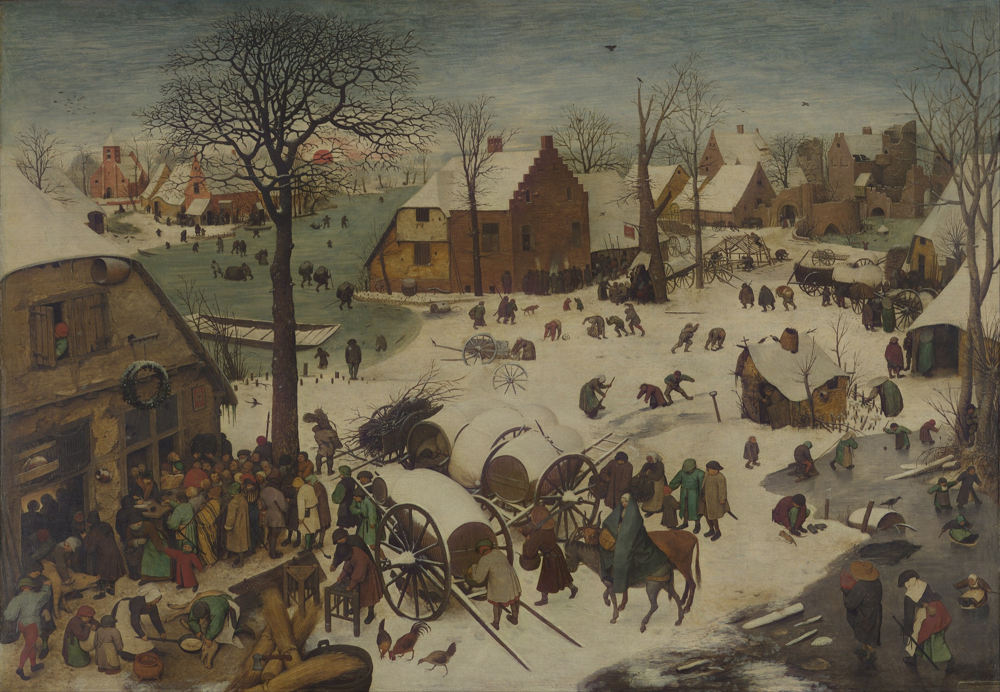
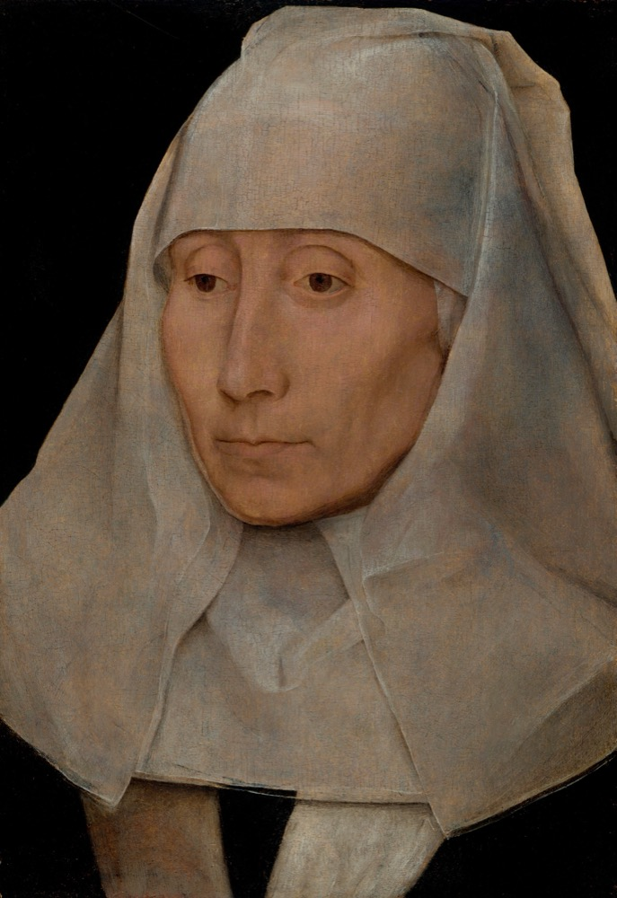
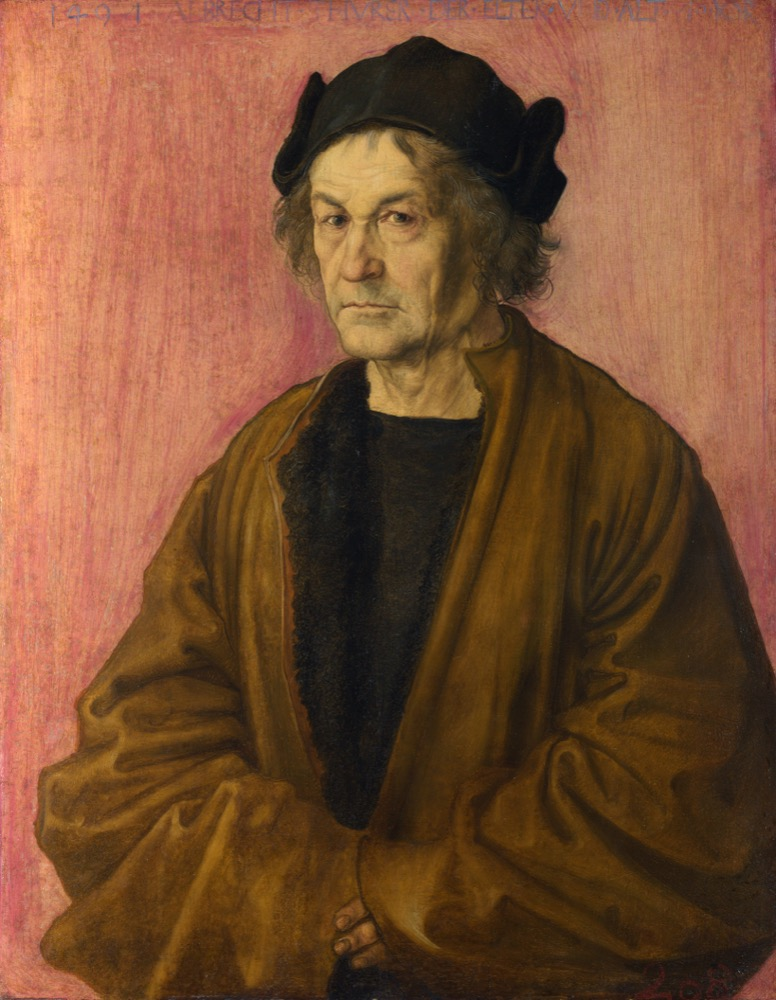
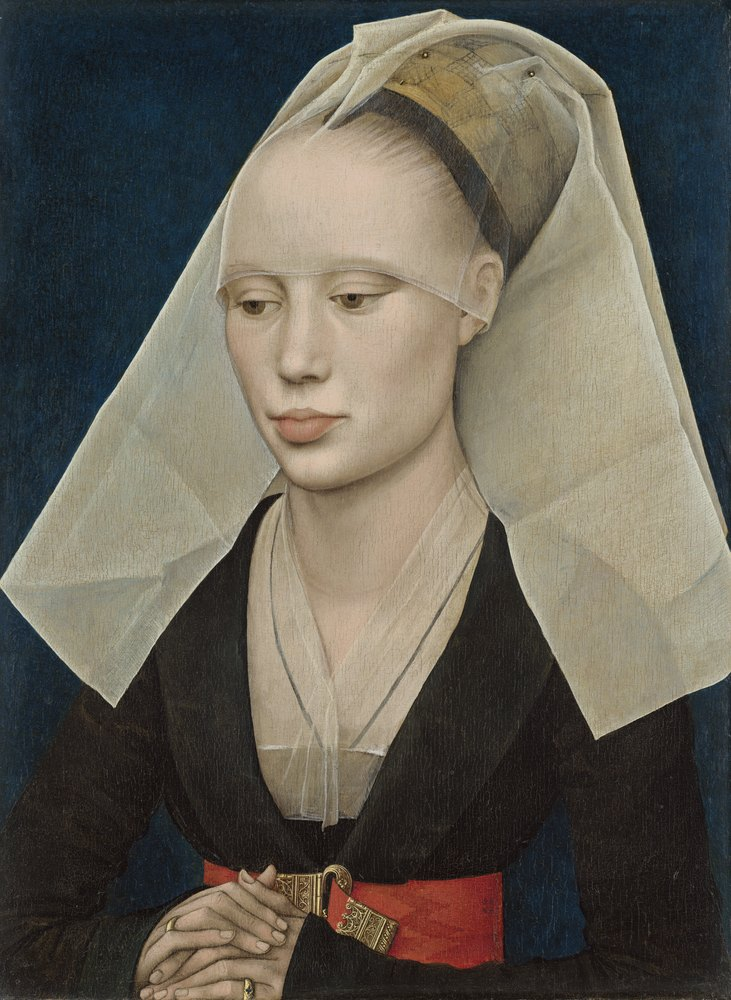
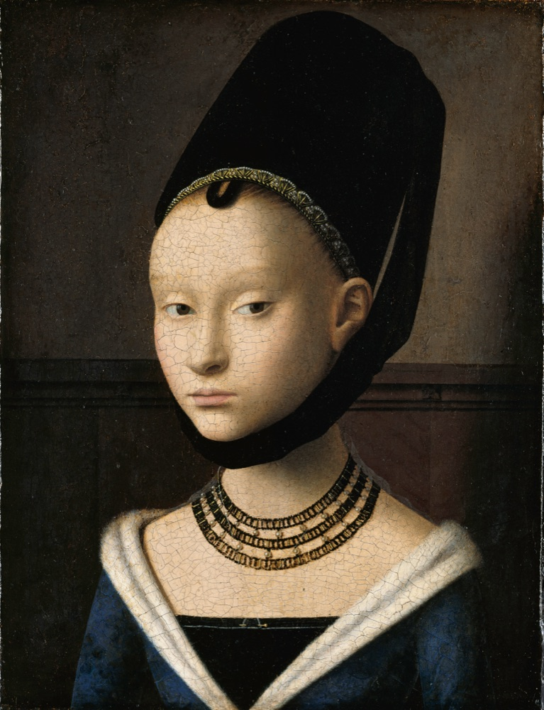

A library of everyone who was
Most people who ever lived were written down once or twice, by a clerk, and never again. This library takes them one at a time, follows each through every record that survives, and writes the life.
Pieter Bruegel the Elder, The Census at Bethlehem, 1566. At the lower left, a village queues to be written into a book.
The lives
Eight alcoves are filled. The empty ones are people met along the way, whose lives nobody has followed yet. Any of them can be yours to write.
- Caroline Molineaux about 1812 to after April 1830 At twelve she was sentenced to death, beside a girl of thirteen, for taking a tin-man’s savings. She spent the rest of her childhood in the Penitentiary at Millbank.
-

Charlotte Walker about 1750 to after 14 December 1801 At fifty she was the only woman among eighteen people sentenced to death at the Old Bailey in January 1800, for a man’s silver watch that she said he had given her until the morning. She was sent to New South Wales for life. For more than twenty years before that, a woman of her name had been tried at the same court eleven times and acquitted every time; whether that woman was she, no record says. -

Edward Wright about 1728 to after 14 September 1808 A sawyer who had broken his arm, and dealt in Rag Fair. From the age of about sixty-two to about eighty-two he was tried at the Old Bailey again and again, most often for laying his bag over something on a shop counter and picking the two up together. In 1797 a clerk wrote that he had been tried almost as often as he was years old. - George Baylis about 1830 to after 15 July 1874 At eleven he asked the court for mercy and got six months. At twelve his father, a former police inspector, asked for him, and the man he had robbed signed the petition. He was transported anyway.
- Julia Mahoney about 1831, in County Cork to after 27 February 1883 A laundress from Cork who lived in Shadwell, by the London docks. From 1864 to 1883 she was in prison more than she was out of it, twice for seven years. Her prison file lists what she was punished for. In October 1874 it was a disturbance about some shoes she had been given, and the punishment was to accept the shoes.
-

Lydia Western about 1785 to after 13 May 1822 For nine years she was the sister of Faith’s ward at St Bartholomew’s Hospital. Convicted of taking its linen, she was sentenced to seven years’ transportation. Two years later the surgeon of Newgate wrote that she had cancer and was not expected to recover, and the answer was that she should serve the rest of her sentence in St Bartholomew’s. -

Susannah Prince about 1709 to 3 January 1741 At sixteen or seventeen she married James Prince, a man born in Jamaica who had been given away as a present when he was an infant. Twice she told the parish what she knew of his life and her own. Then the workhouse registers keep her, to the day she died. -
 William Hayes
about 1832 to after 8 March 1876
At ten he took the boots off three boys’ feet in five days. For the third pair he was sent to the other side of the world for ten years.
William Hayes
about 1832 to after 8 March 1876
At ten he took the boots off three boys’ feet in five days. For the third pair he was sent to the other side of the world for ten years.
- not yet written Mary Ann Munday Twenty-one in 1842, who pawned a stolen pair of boots under another name and got six months.
- not yet written John Tatnell, William Hampshire and Laurence Brennan junior Three boys whose boots were taken off their feet in one week of October 1842.
- not yet written George Baylis senior Once a police inspector of Vintry Ward in the City of London, who petitioned in 1842 for his twelve-year-old son not to be transported, and was refused.
- not yet written Jack the sweep Named by a crying boy in 1819 and acquitted. A database joins him to George Munt, a sweep transported in 1825. Whether they are one boy is not settled.
- not yet written Elizabeth Bosley Thirteen in 1824, sentenced to death beside Caroline Molineaux and freed from the Penitentiary at Millbank on 31 May 1830.
- not yet written Mrs. Foot Who, Lydia Western told the court in 1820, gave her St Bartholomew’s Hospital’s sheets as her own perquisites.
- not yet written Charlotte Walker of Ilminster gaol Seventy-four, sentenced at Bridgwater to fourteen years’ transportation and pardoned in 1840 for her age after five years in gaol (HO 18/26/5). Not the Charlotte Walker of the library.
- not yet written Jane Smith Twenty-four, who stabbed a Julia Mahoney outside the Royal Sovereign in Bluegate Fields in May 1853, saying she owed her a spite, and was transported for ten years (`t18530509-597`).
- not yet written John Osburn About sixty in 1733, who told the parish of St Martin in the Fields that he was born at Guinea in Africa and came to England about the end of Queen Anne’s wars, and was lodging with a trumpeter of the Horse Guards at Marylebone (`smdsset_19_2015`).
- not yet written George Romea About twenty in 1777, born at Bengal, who had been footman six years to a surgeon in Coventry Street for clothes, diet and lodging and no wages, and was then in St Martin’s workhouse (`smdsset_32_50698`).
Not yet known
Every life ends in questions. If you can open an archive the library cannot, one of these may take you an afternoon.
- Caroline Molineaux When she left Millbank. The entry freeing Elizabeth Bosley is in HO 13/55 at page 325, and Caroline’s should be near it.
- Caroline Molineaux What the Millbank register says of her: her parish, her parents, her conduct.
- Caroline Molineaux Who the friends were who were willing to receive her. The paper itself, HO 17/103/136, may name them.
- Caroline Molineaux Whether she had been in prison in 1823.
- Charlotte Walker Whether the Charlotte Walker of the trials of 1777 to 1798, or the Liverpool woman of the registers, was the woman condemned in 1800. The criminal register entry for her committal in December 1799 would give a description and a birthplace to compare; I did not find it.
- Charlotte Walker What Mr Justice Heath reported on her case, and who, if anyone, petitioned for her. The judges’ reports and petitions of 1800 are in the National Archives (HO 47 and HO 42); I found nothing under her name in the catalogue.
- Charlotte Walker Which ship she sailed on. The indent says the Canada; the women of that fleet are said to have sailed on the Nile.
- Charlotte Walker Her life in New South Wales: the musters of 1806, 1811 and 1814, any ticket of leave, any marriage, her burial.
- Edward Wright When and where he died. He was 82, by the court, in September 1808. Burials in London from 1808 were not searched in a register; FreeREG returned nothing for him, but London is thinly transcribed there.
- Edward Wright The sixty trials. The City of London and Middlesex sessions, the Guildhall justice room and the Mansion House would have heard most of them. London Lives covers the Middlesex sessions to 1800; I searched it by name only, and the City’s sessions papers were not searched by me at all.
- Edward Wright The Newgate calendars (HO 77) for 1796 to 1808, indexed on Find My Past, and the criminal registers after 1800 on Ancestry. They would give his descriptions and committals for 1801, 1802, 1806 and 1808.
- Edward Wright HO 13/15, pp. 113–14, at the National Archives: the order that turned his death sentence into two years in Newgate. And whether a judge’s report on him survives in HO 47.
- George Baylis The petition itself, HO 18/87/59 at the National Archives: his father’s own words, the nine names, and whether his mother is mentioned.
- George Baylis Who spoke for his character at the first trial.
- George Baylis His father’s service. A police inspector of Vintry Ward should be in the City of London’s records, and so should the reason he was a former one by 1842.
- George Baylis His baptism, about 1829 or 1830, in or near Cheapside, and his mother’s name.
- Julia Mahoney When and where she was born, and when she came to London.
- Julia Mahoney Whether the Julia Mahoney stabbed in Bluegate Fields in 1853 was she.
- Julia Mahoney What the pages of PCOM 4/48/29 say beyond the transcription, and whether it holds a photograph.
- Julia Mahoney What “& 7 times” refers to in her list of previous convictions, and what the Thames Police Court’s own records hold.
- Lydia Western Whether she went back to St Bartholomew’s, and when. The hospital’s own archive (Barts Health NHS Trust Archives) may hold admission registers and the governors’ journals.
- Lydia Western When she died, and where she was buried. The burial ground of St Bartholomew-the-Less, the hospital’s parish church, is the first place to look.
- Lydia Western When she was appointed sister, and what the governors’ journals say of her resignation in April 1820.
- Lydia Western Who Mrs Foot was, and whether she was the sister who was dead.
- Susannah Prince The Fleet register entry for the marriage, about 1726, at the Hand and Pen. The Fleet registers are at the National Archives (RG 7); their indexes are on subscription sites.
- Susannah Prince James Prince’s burial, about October 1737, and hers, in January 1741. The burial registers of St Martin in the Fields were not read.
- Susannah Prince The child she was expecting in January 1730: whether it was born, baptised, and lived.
- Susannah Prince Where she was born, and who her parents were. Neither examination says.
- William Hayes Where he was between 1843 and 1851, and whether he was at Point Puer. His conduct record in the Tasmanian archives will say.
- William Hayes Who his parents were. A baptism between 1831 and 1834, near Oxford Street or in Essex, would be the place to start.
- William Hayes What happened in Hobart in 1869. The newspapers of that September will have reported the Supreme Court.
- William Hayes Anything at all between 1852 and 1869: work, a marriage, children.